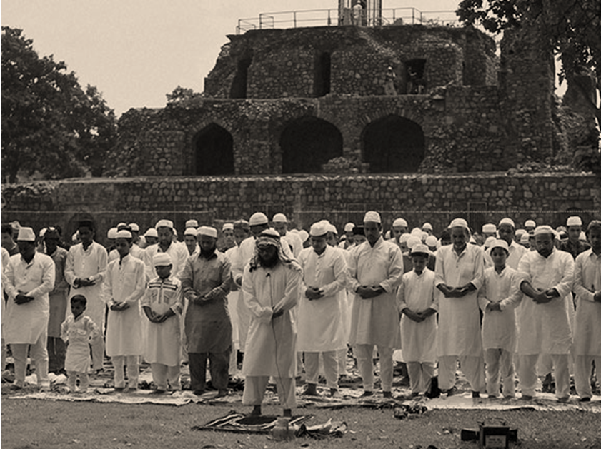
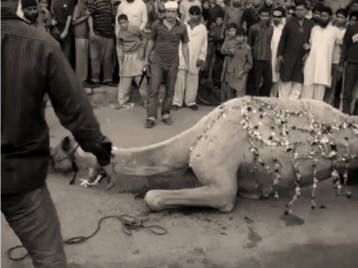

As per the report, Muslims constitute over 90% of the population. Islamic calendar or Muslim calendar also called the Hijri calendar is the calendar used to date events in many predominantly Muslim countries and used by Muslims everywhere to determine the proper day on which to celebrate Islamic holy days or other Islamic Occasions. Islam, the religion of Fitrah (nature), allows its followers to experience the pleasures, joy, and gaiety of festivals and celebrations. Maintaining Islam's unique identity, the Prophet Muhammad (PBUH) declared two festivals, namely the Feast of Fast-breaking (Eid-ul-Fitr) and the Feast of Sacrifice (Eid-ul-Adha). In addition to these two main festivals, other social festivities such as the festivity of the Newly Born (Aqeeqah) and the festivity of the Wedding (Waleemah) are also encouraged.
Eid-ul-Fitr(the Feast of Fast-breaking)
Eid-ul-Fitr is celebrated during the first three days of the month of Shawwal. This feast marks the completion of the month of fasting (Ramadan). Eid-ul-Fitr is the manifestation of real joy and thankfulness for the opportunities which Allah has given Muslims to fulfil their obligation of fasting and perform other good deeds during the month of Ramadan.

Eid-ul-Adha(the Feast of Sacrifice)
Eid-ul-Adha is celebrated on the tenth day of the month of Dhul-Hijjah every year. Muslims who can afford it, congregate in Mecca, Arabia, for the performance of pilgrimage (Hajj) in this month. The sacrifice of an animal on the tenth day of Dhul-Hijjah marks the completion of the pilgrimage. Muslims who are not on pilgrimage are encouraged to fast the first nine days of Dhul-Hijjah, or at least to fast on a ninth day (the day of Arafat) the day before the Feast of Sacrifice. On the day of Eid, Muslims collectively express their gratitude by remembering, praising, and glorifying Allah in the form of congregational prayer (Salat-ul-Eid).
Besides this two main occasion, Muslim celebrates some other festivals like-
-Shab e barat
-Shab e Qadr
-Jamatul Bidah
-Ashura etc.